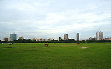
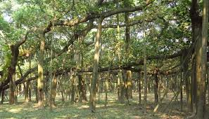
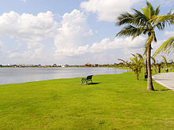

Alipur Zoo
 Alipore Zoological Gardens was founded in 1875, inaugurated by The Prince of Wales (later Edward VII). Initially started from the personal menagerie
of the then Governor General of Bengal Arthur Wellesley and Carl Louis Schwendler - a German electrician, it grew based on gifts from British and
Indian nobility - like Raja Suryakanta Acharya of Mymensingh in whose honour the open air tiger enclosure is named the "Mymensingh Enclosure".
The zoo was ill-reputed because of cross breeding experiments between lions and tigers to produce strains like tigons, ligers, and litigons. Adwaita
was a male Aldabra giant tortoise in the zoo which died in March, 2006. He was reported to have been more than 250 years old - a candidate for the
longest lived animal. The other success story of the zoo was a live birth of the rare Sumatran rhinoceros in 1889. The zoo is downsizing to meet animal
comfort requirements laid down by the Central Zoo Authority of India. The zoo is also on the flyway for several migratory birds like the sarus crane.
Alipore Zoological Gardens was founded in 1875, inaugurated by The Prince of Wales (later Edward VII). Initially started from the personal menagerie
of the then Governor General of Bengal Arthur Wellesley and Carl Louis Schwendler - a German electrician, it grew based on gifts from British and
Indian nobility - like Raja Suryakanta Acharya of Mymensingh in whose honour the open air tiger enclosure is named the "Mymensingh Enclosure".
The zoo was ill-reputed because of cross breeding experiments between lions and tigers to produce strains like tigons, ligers, and litigons. Adwaita
was a male Aldabra giant tortoise in the zoo which died in March, 2006. He was reported to have been more than 250 years old - a candidate for the
longest lived animal. The other success story of the zoo was a live birth of the rare Sumatran rhinoceros in 1889. The zoo is downsizing to meet animal
comfort requirements laid down by the Central Zoo Authority of India. The zoo is also on the flyway for several migratory birds like the sarus crane.
Maidan

Maidan means "field" in Hindi, Marathi, Urdu and Bengali. The Kolkata Maidan was once a vast uninterrupted field, right down to the edge of the Hoogli,
but is being encroached upon by the city and is fragmented by roads. The Maidan has nurtured sports like Polo, and has been the home of equestrianism,
horse racing, football, cricket and rugby in Kolkata. It houses numerous clubs including the "big three" of Indian football - Mohun Bagan Athletic Club,
East Bengal Football Club and Mohammedan Sporting Club along with their respective home stadiums. The arterial Chowringhee Avenue, Eden Gardens and the
Millennium Park and the associated 3 km long Riverfront beautification project border the Maidan. The Maidan abounds with monuments and statues, the most
famous of them being Shaheed Minar and the statue of ace footballer Gostho Pal. The Elliot Park, Mohor Kunja and the Victoria Memorial complex are three
parks which are situated in the Maidan area.
Indian Botanical Garden

The Indian Botanical Garden, spread over 270 acres (1.1 km2), was founded in 1786 and is the oldest "botanics" in India. Housing 50,000 species, the
Botanical Survey of India and one of the world's most historically relevant herbariums, it is famous for its 250-year-old, 98-foot-tall banyan tree -
which has the largest girth of any banyan tree ever recorded (1300 ft).
Eco Park

The Salt Lake Central Park is a large urban park in the centre of the Bidhan Nagar township, with a lake in the middle and information technology and
government offices along its fringes. New Town Eco Park (officially Prakriti Tirtha), located in New Town, is situated on a 480 acres (190 ha) plot
and is surrounded by a 104 acres (42 ha) waterbody with an island in the middle. The park has been divided into three broad parts; (1) ecological
zones like wetlands, grasslands, and urban forest, (2)theme gardens and open spaces, (3)and urban recreational spaces.The Eco Park is further divided
into different sub-parts according to the different types of fauna planted.
Ravindra Sarovar
 Rabindra Sarobar or "The Lake" is an artificial lake and urban park in the spirit of Central Park, New York City. The park has a lake and an island
with a footbridge, an open-air amphitheatre (Nazrul Mancha), a sports stadium (Rabindra Sarobar Stadium), a children's park and the rowing clubs of
Calcutta Rowing Club, Bengal Rowing Club and Lake Club.
Rabindra Sarobar or "The Lake" is an artificial lake and urban park in the spirit of Central Park, New York City. The park has a lake and an island
with a footbridge, an open-air amphitheatre (Nazrul Mancha), a sports stadium (Rabindra Sarobar Stadium), a children's park and the rowing clubs of
Calcutta Rowing Club, Bengal Rowing Club and Lake Club.